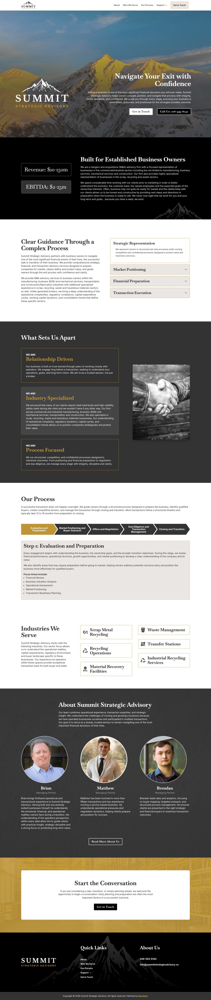

Inland Elite Hosting ↗
2026 — PRESENTMy hosting business, built around straightforward service and a real person to call. Bringing web design, development, and the technical side together.
From the first design decision to the server it runs on. I build websites, solve technical problems, and help people feel at home with their technology.
Explore my work ↓A business. A product. A decade of building.
My hosting business, built around straightforward service and a real person to call. Bringing web design, development, and the technical side together.
A clear, trust-led website for an M&A advisory firm helping established business owners navigate complex transitions.
The site needed to explain a detailed advisory process, establish credibility quickly, and help prospective clients understand whether the firm was the right fit.
I created a restrained, professional experience built around clear positioning, an approachable step-by-step process, industry expertise, and personal introductions to the team.
Result: A focused, responsive website that makes a complex service easier to understand and gives business owners a confident path to start a conversation.

A service site designed to turn an anxious moment into a clear next step for local and long-distance moving customers.
Challenge: Present several moving services and service areas while keeping the quote request immediate.
Approach: Lead with an estimate form, then layer financing, service categories, geographic reach, and customer proof in a direct sequence.
Result: An action-oriented experience that makes the company feel capable, available, and easy to contact.
A reassuring professional-services website that helps people facing difficult family transitions understand their options and take a clear next step.
Challenge: Present sensitive family-law services with enough authority to build trust while keeping the experience approachable for people arriving under stress.
Approach: Lead with a direct promise of answers, organize the firm's values into clear pillars, introduce the attorney personally, and place appointment and contact paths throughout the page.
Result: A calm, credible website that explains the firm's perspective, humanizes the practice, and makes it easy for prospective clients to begin a conversation.
A locally focused landscaping website built to communicate construction expertise, service quality, and a straightforward path to requesting a quote.
Challenge: Differentiate a full-service landscaping company in a crowded local market while giving property owners enough proof to feel confident making contact.
Approach: Combine a strong regional message with project photography, an explicit commitment to quality, customer testimonials, and repeated phone and inquiry calls to action.
Result: A focused service website that connects local expertise with visible workmanship and guides prospective customers toward a consultation.
A concise insurance website that organizes personal, commercial, group, and consulting services around accessibility and local relationships.
Challenge: Explain several insurance categories without making the experience feel dense, impersonal, or difficult to navigate.
Approach: Use a short service overview, a prominent quote path, a team-focused introduction, and location-specific contact options to make assistance feel immediate.
Result: A streamlined agency presence that clarifies available coverage and puts a recognizable local team behind every inquiry.
A recipe-sharing product concept that treats recipes as evolving work, making revisions, forks, and community improvements visible and understandable.
Challenge: Translate software versioning concepts into a cooking experience that feels useful and familiar rather than technical or intimidating.
Approach: Center the recipe and its photography, then reveal revision history through plain-language comparisons, before-and-after changes, forks, and lightweight community signals.
Result: A clear product direction that demonstrates how cooks could adapt recipes while preserving their origin, history, and most useful improvements.
A technical sales and support website that balances equipment, service capabilities, manufacturer credibility, and urgent customer needs.
Challenge: Make a broad industrial offering legible to buyers who may arrive with an immediate equipment, repair, or maintenance requirement.
Approach: Organize the page around product proof, manufacturer relationships, nationwide coverage, support capabilities, financing, and clear service and quote paths.
Result: A practical information system that supports both considered equipment purchases and time-sensitive service requests.
An education-led skincare storefront connecting products to ingredients, routines, expected results, and the founder behind the brand.
Challenge: Communicate efficacy and a natural formulation philosophy without losing the clarity of a product-first shopping experience.
Approach: Alternate product discovery with concise education, ingredient stories, routine guidance, testimonials, and a personal founder introduction.
Result: A considered storefront that builds confidence in the brand before asking customers to choose a product or skincare routine.
A searchable client knowledgebase that brings project guidance, technical tutorials, marketing education, and common terminology into one support destination.
Challenge: Make a growing library of technical and marketing information easy for clients to scan, understand, and revisit without direct assistance.
Approach: Use persistent category navigation, prominent search, plain-language summaries, and visually distinct content groups to reduce the effort required to find the right guide.
Result: A self-service support hub that creates a predictable starting point for common project, website, hosting, and marketing questions.
A dual-audience property management website that gives owners and tenants distinct paths while presenting the company as an experienced local partner.
Challenge: Serve property owners and tenants with different priorities without fragmenting the brand or making essential resources difficult to locate.
Approach: Separate the two audiences immediately, then support both with a local overview, company mission, human-centered approach, and clearly grouped management, maintenance, and cleaning services.
Result: A structured local presence that helps each audience find relevant information quickly while reinforcing trust in the management team.
A personality-led consulting website that translates flexible advisory services into clear packages for tradespeople and small-business owners.
Challenge: Explain a broad, adaptable consulting offer without making it feel vague, overly corporate, or disconnected from the daily pressures of running a small business.
Approach: Build the story around the founder's experience, use direct problem-focused language, compare service packages clearly, and repeat a low-friction consultation offer.
Result: A distinctive advisory website that makes the offer easier to compare and gives business owners a practical reason to start a conversation.
A clear, trust-led website for an M&A advisory firm helping established business owners navigate complex transitions.
Challenge: Explain a detailed advisory process, qualify prospective clients, and establish credibility around a high-stakes decision without overwhelming the owner.
Approach: Pair direct business criteria with a visible transaction process, sector expertise, relationship-led values, and personal introductions to the advisory team.
Result: A focused professional-services website that makes a complex engagement easier to understand and provides a confident path to begin the conversation.
An experience-driven lighting website that helps homeowners picture permanent and seasonal installations before requesting an estimate.
Challenge: Explain a relatively unfamiliar permanent-lighting service while demonstrating its visual possibilities and addressing the practical installation process.
Approach: Lead with completed homes, show seasonal use cases, provide an interactive lighting preview, reduce the process to three steps, and reinforce the offer with customer proof.
Result: A visually persuasive service website that turns product curiosity into a clear understanding of the experience and an invitation to request an estimate.
A broad financial-services website that organizes tax, bookkeeping, payroll, planning, notary, and educational offerings into an approachable client journey.
Challenge: Present a wide range of related financial services without obscuring the firm's central promise of accurate, personal, and dependable support.
Approach: Establish the value proposition first, give each service a concise explanation and next step, then reinforce the relationship through team imagery, reviews, and repeated scheduling paths.
Result: A comprehensive but navigable website that helps individuals and businesses identify the right service and move toward an appointment.
A warm local bakery website that connects the menu, custom ordering, community mission, charitable work, and storefront information in one inviting story.
Challenge: Represent both the bakery's products and its community role while keeping menus, orders, catering, and location details easy to find.
Approach: Open with product photography, organize the menu by daypart, create direct order and catering paths, and weave the bakery's inclusive mission and local partnerships through the page.
Result: An expressive neighborhood-business website that supports practical customer needs while giving the bakery's people and purpose equal visibility.
An ongoing ecommerce project for a North Idaho retailer offering apparel, workshops, and locally curated goods.
I helped organize the store's growing product catalog, improve navigation, connect external sales tools, and make workshops easier for customers to discover and register for.
My role: Shopify development, UX recommendations, integrations, and client support
Stack: Shopify, Liquid, JavaScript, Faire, Square
Result: A clearer storefront that supports a broader product mix while remaining manageable for the client.
A “GitHub for recipes” concept. Exploring how recipes can be shared, forked, and improved while keeping the story of each change.
The MVP brings together recipe profiles, public and private recipes, favorites, discovery, and following other cooks. Forking lets someone make a recipe their own while preserving its origin.
Currently in development; this is an evolving personal project.
A comprehensive ecommerce engagement for a health and wellness retailer. I served as the sole web developer and designer while managing the day-to-day operation and continued development of its Shopify Plus store.
My work covered the full storefront: creating and organizing products and collections, customizing the theme, building page and product templates, configuring apps, and supporting both direct-to-consumer and wholesale sales. I was responsible for translating business needs into practical changes across the store without relying on a separate development or design team.
My role: Sole web developer, designer, and ecommerce manager
Work: Store management, theme development, templates, product architecture, app integrations, and wholesale
Stack: Shopify Plus, Liquid, JavaScript, HTML, CSS
Result: A centrally managed Shopify Plus storefront capable of supporting retail and wholesale customers, ongoing merchandising, and changing business requirements.
An ecommerce storefront for a security equipment retailer with a specialized and expanding product catalog. I had full responsibility for the website as its sole developer and designer.
I created and managed products and collections, customized the theme, developed page and product templates, selected and configured Shopify apps, and handled ongoing storefront improvements. The work required balancing customer-facing usability with the practical needs of maintaining a technical product catalog.
My role: Sole web developer, designer, and ecommerce manager
Work: Store management, theme development, templates, product organization, app configuration, and ongoing support
Stack: Shopify, Liquid, JavaScript, HTML, CSS
Result: A maintainable ecommerce storefront that organized specialized products into a structure customers could navigate and the business could continue expanding.
A complete ecommerce migration for a tactical equipment retailer moving from WooCommerce to Shopify. The project involved rebuilding the customer-facing store while also recreating the operational systems needed to sell, fulfill, and market its products.
I built the Shopify theme, migrated and organized the product catalog, configured shipping and store settings, selected and implemented the required apps, and connected the store with Google and Facebook for product listings and advertising.
My role: Shopify developer and migration lead
Work: Platform migration, theme development, product migration, shipping configuration, app setup, and sales-channel integrations
Stack: Shopify, Liquid, JavaScript, HTML, CSS, WooCommerce, Google Merchant Center, and Meta
Result: The business moved from WooCommerce to a fully configured Shopify store with its catalog, fulfillment settings, applications, and external marketing channels ready to operate from the new platform.
A custom web application that allowed users to create accounts, upload original images, enter competitions, and rate other submissions. Contest results were determined by those ratings, with winners receiving monetary prizes.
As development team lead, I helped define the application's technical requirements, completed much of the front-end development, and coordinated the work needed to connect the user interface with the application's backend. I delegated backend development, reviewed implementation decisions, managed progress, and helped ensure the different parts of the platform worked together as a complete experience.
My role: Development team lead and front-end developer
Work: Technical planning, front-end development, developer coordination, authentication, image-upload workflows, contest management, ratings, and quality review
Stack: PHP Laravel, Vue.js
Result: The team delivered a working community platform that supported the complete contest process, from account creation and image submission through voting and winner selection.
I manage the technical systems behind a portfolio of client websites, including hosting environments, DNS, migrations, backups, security, email-related configuration, and ongoing troubleshooting.
My work includes provisioning and maintaining servers, moving websites between hosting providers, diagnosing performance and availability problems, recovering compromised WordPress installations, removing malicious code, and helping clients restore normal operations after technical incidents.
My role: Hosting provider, server administrator, and incident responder
Work: Hosting management, DNS, migrations, backups, malware cleanup, security hardening, monitoring, and client support
Stack: Cloudways, DigitalOcean, cPanel, Cloudflare, WordPress, Linux, MySQL, and related hosting tools
Result: Clients have one point of responsibility for both their websites and the infrastructure supporting them, allowing problems to be diagnosed across the application, domain, and server layers.
I'm Brian, a web developer and designer based in Hayden, Idaho. My work spans agency development, independent projects, and the everyday responsibility of keeping websites running.
I like being involved beyond the handoff: understanding what someone needs, making it easier to use, and giving them the confidence to manage it. Today, that approach also shapes Inland Elite Hosting.
Laravel · PHP · MySQL
JavaScript · HTML · CSS
Shopify · WordPress
Craft CMS · Squarespace
Cloudways · DigitalOcean
Hosting · Client training
Building an owner-operated hosting business for small businesses and web professionals. Bringing together hosting management, website support, design, and development.
Develop websites across Shopify, WordPress, and Craft CMS. Guide technical implementation, coordinate subcontractors, and train clients to manage their websites.
Designed, developed, and supported client websites while managing ongoing hosting relationships. Independent work now continues through Inland Elite.
Interested in my experience or a potential role?
Let's talk.
Send a message and I'll get back to you directly.